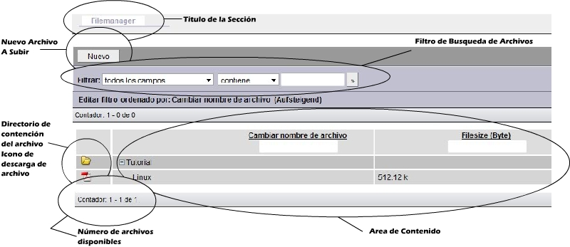
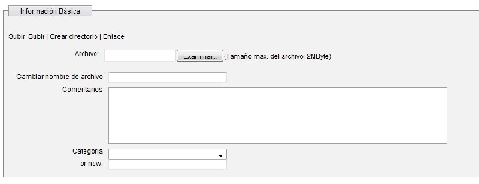
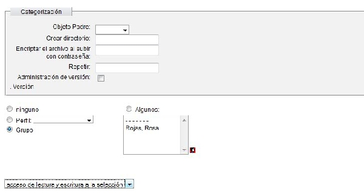

Archivo (Filemanager)En el modulo de Archivo nos muestra los archivos actuales de los que dispone el grupo, con la posibilidad de categorizar en directorios de tipo árbol. Para abrir algun directorio bastara con darle click al signo de más el cual expande el directorio mostrando el contenido de los archivos. Una vez abierto el directorio podemos ver el icono que muestra el tipo de archivo al darle un click a este nos descarga el archivo. Si damos click al nombre nos redirecciona a la opción de modificar datos sobre el archivo, para el cual si fue encriptado solo el dueño puede cambiarlo. Finalmente esta el tamaño del archivo y un pequeño buscador en la parte superior con un filtro de busqueda para facilitar la busqueda en caso de tener muchos archivos. Para agregar un archivo dar vista en el botón de nuevo los pasos para agregar un nuevo archivos seran detallados debajo de la imagen.  Agregando un Nuevo Archivo Al darle click en nuevo nos aparece la siguiente ventana.  En examinar, buscamos la dirección del archivo, luego si deseamos renombrarlo le damos otro nombre en caso de no cambiarlo este campo va vacio.  En Categorización Objeto padre, si ya se tiene un directorio y se desea crear una sub carpeta o guardar el archivo en dicha carpeta, se da click en la pestaña se selecciona el directorio, del cual va a guardarse el archivo o se va a crear el subdirectorio. Para modificar, borrar o bloquear archivo, basta con darle click al archivo nos manda a la ventana que es igual a la de agregar, en caso de modificar damos los cambios necesarios y luego le damos guardar, para borrar click en el boton de borrar y de igual forma bloquear para bloquear si se esta bloqueado aparecera desbloquear, los demas botones se ignoraran. |